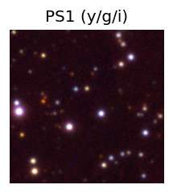
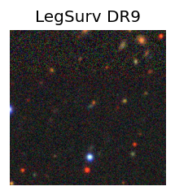
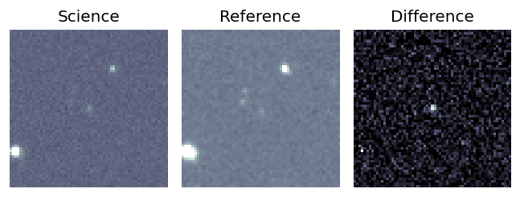
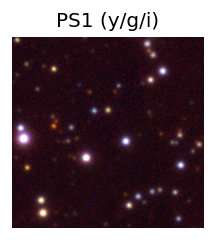
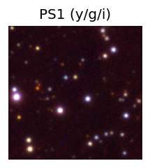
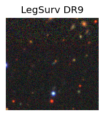
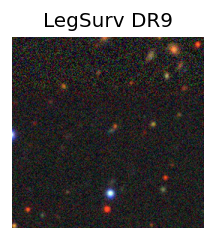

Candidate List 20250729 Previous Day Next Day Section 1: New Sources (age<1d) Cosmological Afterglow
Section 2: Old (1-5d) sources observed last night placeholder
Section 1: New Afterglow/FBOT Cands Last Night (1)
1. ZTF25abfjnci (Afterglow?) [Back to Top] [Share] [Trigger Swift] [Fritz ] [Lasair ]RA, Dec: 331.54759, 56.59096 22h 6m11.42s, 56d35m27.45sGalactic (l, b): 101.61542, 0.71944 ext(g-r) = 2.04PS1: 1 source in 3 arcsec Closest: d = 2.29 arcsec photoz=0.70+/-0.07 peak abs mag = -28.99 Consistent with synchrotron, g-r>0!
Section 2: Older Sources Observed Last Night (20)
0. ZTF25abdhyhr (Afterglow?) [Back to Top] [Share] [Trigger Swift] [Fritz ] [Lasair ]RA, Dec: 332.187, -27.85358 22h 8m44.88s, -27d-51m-12.90sGalactic (l, b): 22.12031, -54.08103 ext(g-r) = 0.021 Consistent with synchrotron, g-r>0!
1. ZTF25abdsrto (Afterglow?) [Back to Top] [Share] [Trigger Swift] [Fritz ] [Lasair ]RA, Dec: 290.75235, -8.43592 19h23m0.57s, -8d-26m-9.31sGalactic (l, b): 28.92551, -10.82363 ext(g-r) = 0.269 PS1: 1 source in 3 arcsec Closest: d = 6.16 arcsec photoz=0.49+/-0.04 peak abs mag = -26.61
2. ZTF25abdtpbf (Afterglow?) [Back to Top] [Share] [Trigger Swift] [Fritz ] [Lasair ]RA, Dec: 255.50577, -24.85555 17h 2m1.38s, -24d-51m-19.97sGalactic (l, b): 357.93707, 10.33422 ext(g-r) = 0.356
3. ZTF25abdzeop (FBOT?) [Back to Top] [Share] [Trigger Swift] [Fritz ] [Lasair ]RA, Dec: 191.16238, 12.54513 12h44m38.97s, 12d32m42.49sGalactic (l, b): 296.37716, 75.33042 ext(g-r) = 0.031peak abs mag = -19.10 LegacySurvey: 1 sources in 3 arcsec Closest: d = 0.25 arcsec, 312.6 deg (east of north) photoz=0.27 (68% bounds 0.05, 0.97), type=EXP peak abs mag = -21.5 (68% bounds -17.5, -24.83)
4. ZTF25abdzkae (FBOT?) [Back to Top] [Share] [Trigger Swift] [Fritz ] [Lasair ]RA, Dec: 266.82562, 29.26902 17h47m18.15s, 29d16m8.47sGalactic (l, b): 54.13579, 25.93633 ext(g-r) = 0.067 LegacySurvey: 1 sources in 3 arcsec Closest: d = 1.26 arcsec, 289.8 deg (east of north) photoz=0.3 (68% bounds 0.2, 0.49), type=EXP peak abs mag = -21.67 (68% bounds -20.65, -22.92)
5. ZTF25abecvml (FBOT?) [Back to Top] [Share] [Trigger Swift] [Fritz ] [Lasair ]RA, Dec: 347.52788, 3.15332 23h10m6.69s, 3d 9m11.95sGalactic (l, b): 80.07792, -51.08804 ext(g-r) = 0.06LegacySurvey: 1 sources in 3 arcsec Closest: d = 0.42 arcsec, 62.6 deg (east of north) photoz=0.09 (68% bounds 0.07, 0.11), type=REX peak abs mag = -19.46 (68% bounds -18.88, -19.89)
6. ZTF25abeembj (FBOT?) [Back to Top] [Share] [Trigger Swift] [Fritz ] [Lasair ]RA, Dec: 359.36856, -5.93647 23h57m28.46s, -5d-56m-11.30sGalactic (l, b): 89.31134, -65.22356 ext(g-r) = 0.031peak abs mag = -20.12 LegacySurvey: 1 sources in 3 arcsec Closest: d = 0.64 arcsec, 72.5 deg (east of north) photoz=0.2 (68% bounds 0.19, 0.21), type=SER peak abs mag = -19.82 (68% bounds -19.68, -19.95)
7. ZTF25abeklax (Afterglow?) [Back to Top] [Share] [Trigger Swift] [Fritz ] [Lasair ]RA, Dec: 276.45204, -21.28066 18h25m48.49s, -21d-16m-50.37sGalactic (l, b): 11.12896, -4.18314 ext(g-r) = 1.196PS1: 1 source in 3 arcsec Closest: d = 0.49 arcsec photoz=0.18+/-0.01 peak abs mag = -25.05
8. ZTF25abeldjp (FBOT?) [Back to Top] [Share] [Trigger Swift] [Fritz ] [Lasair ]RA, Dec: 343.27992, 14.34261 22h53m7.18s, 14d20m33.38sGalactic (l, b): 84.59042, -39.56229 ext(g-r) = 0.066peak abs mag = -22.03 LegacySurvey: 1 sources in 3 arcsec Closest: d = 1.24 arcsec, 305.1 deg (east of north) photoz=0.12 (68% bounds 0.11, 0.14), type=SER peak abs mag = -18.89 (68% bounds -18.62, -19.17) Consistent with synchrotron, g-r>0!
9. ZTF25abeprnk (Afterglow?) [Back to Top] [Share] [Trigger Swift] [Fritz ] [Lasair ]RA, Dec: 12.27471, -2.13394 0h49m5.93s, -2d-8m-2.20sGalactic (l, b): 121.54912, -64.99941 ext(g-r) = 0.045peak abs mag = -18.80 LegacySurvey: 1 sources in 3 arcsec Closest: d = 3.23 arcsec, 272.8 deg (east of north) photoz=0.09 (68% bounds 0.07, 0.1), type=SER peak abs mag = -18.54 (68% bounds -18.18, -18.86)
10. ZTF25abeqorz (FBOT?) [Back to Top] [Share] [Trigger Swift] [Fritz ] [Lasair ]RA, Dec: 195.33232, 4.23164 13h 1m19.76s, 4d13m53.91sGalactic (l, b): 309.24959, 66.98198 ext(g-r) = 0.03peak abs mag = -20.77 LegacySurvey: 1 sources in 3 arcsec Closest: d = 1.06 arcsec, 259.8 deg (east of north) photoz=0.09 (68% bounds 0.05, 0.14), type=SER peak abs mag = -18.8 (68% bounds -17.59, -19.76)
11. ZTF25abesbyo (FBOT?) [Back to Top] [Share] [Trigger Swift] [Fritz ] [Lasair ]RA, Dec: 303.74073, -23.17128 20h14m57.77s, -23d-10m-16.61sGalactic (l, b): 19.77547, -28.10262 ext(g-r) = 0.126PS1: 1 source in 3 arcsec Closest: d = 1.15 arcsec photoz=0.20+/-0.05 peak abs mag = -20.88
12. ZTF25abeuvaa (FBOT?) [Back to Top] [Share] [Trigger Swift] [Fritz ] [Lasair ]RA, Dec: 327.90779, -27.248 21h51m37.87s, -27d-14m-52.81sGalactic (l, b): 22.06467, -50.23943 ext(g-r) = 0.033PS1: 1 source in 3 arcsec Closest: d = 1.16 arcsec photoz=0.34+/-0.29 peak abs mag = -21.93
13. ZTF25abewmjr (Afterglow?) [Back to Top] [Share] [Trigger Swift] [Fritz ] [Lasair ]RA, Dec: 337.98148, 32.6787 22h31m55.56s, 32d40m43.32sGalactic (l, b): 91.75251, -21.61408 ext(g-r) = 0.091peak abs mag = -19.39 LegacySurvey: 1 sources in 3 arcsec Closest: d = 1.10 arcsec, 302.0 deg (east of north) photoz=0.1 (68% bounds 0.07, 0.16), type=EXP peak abs mag = -18.69 (68% bounds -17.89, -19.75) Consistent with synchrotron, g-r>0!
14. ZTF25abewrxj (Afterglow?) [Back to Top] [Share] [Trigger Swift] [Fritz ] [Lasair ]RA, Dec: 5.54352, 34.76596 0h22m10.45s, 34d45m57.47sGalactic (l, b): 116.14536, -27.71986 ext(g-r) = 0.06peak abs mag = -16.75 PS1: 1 source in 3 arcsec Closest: d = 4.49 arcsec photoz=0.06+/-0.01 peak abs mag = -17.42 Consistent with synchrotron, g-r>0!
15. ZTF25abeyogz (FBOT?) [Back to Top] [Share] [Trigger Swift] [Fritz ] [Lasair ]RA, Dec: 327.51972, -10.43359 21h50m4.73s, -10d-26m-0.91sGalactic (l, b): 45.35054, -44.25132 ext(g-r) = 0.042LegacySurvey: 1 sources in 3 arcsec Closest: d = 0.13 arcsec, 170.7 deg (east of north) photoz=0.23 (68% bounds 0.14, 0.34), type=REX peak abs mag = -20.04 (68% bounds -18.79, -20.99) Consistent with synchrotron, g-r>0!
16. ZTF25abfgbdx (FBOT?) [Back to Top] [Share] [Trigger Swift] [Fritz ] [Lasair ]RA, Dec: 270.53387, -14.82338 18h 2m8.13s, -14d-49m-24.17sGalactic (l, b): 14.11668, 3.84177 ext(g-r) = 1.29PS1: 1 source in 3 arcsec Closest: d = 0.20 arcsec photoz=0.91+/-0.09 peak abs mag = -26.81
17. ZTF25abfgjkj (Afterglow?) [Back to Top] [Share] [Trigger Swift] [Fritz ] [Lasair ]RA, Dec: 280.25658, -21.83589 18h41m1.58s, -21d-50m-9.19sGalactic (l, b): 12.23966, -7.5901 ext(g-r) = 0.421PS1: 1 source in 3 arcsec Closest: d = 2.87 arcsec photoz=0.63+/-0.06 peak abs mag = -24.31
18. ZTF25abfhblb (FBOT?) [Back to Top] [Share] [Trigger Swift] [Fritz ] [Lasair ]RA, Dec: 339.96266, 2.93633 22h39m51.04s, 2d56m10.79sGalactic (l, b): 71.20469, -46.29767 ext(g-r) = 0.084peak abs mag = -23.46 LegacySurvey: 1 sources in 3 arcsec Closest: d = 0.84 arcsec, 123.8 deg (east of north) photoz=0.16 (68% bounds 0.14, 0.19), type=SER peak abs mag = -19.21 (68% bounds -18.82, -19.59)
19. ZTF25abfhuzy (Afterglow?) [Back to Top] [Share] [Trigger Swift] [Fritz ] [Lasair ]RA, Dec: 314.10531, -4.40886 20h56m25.27s, -4d-24m-31.90sGalactic (l, b): 44.0429, -29.69174 ext(g-r) = 0.089LegacySurvey: 1 sources in 3 arcsec Closest: d = 1.57 arcsec, 12.6 deg (east of north) photoz=0.83 (68% bounds 0.71, 0.92), type=PSF peak abs mag = -23.99 (68% bounds -23.58, -24.25) 


 



 
